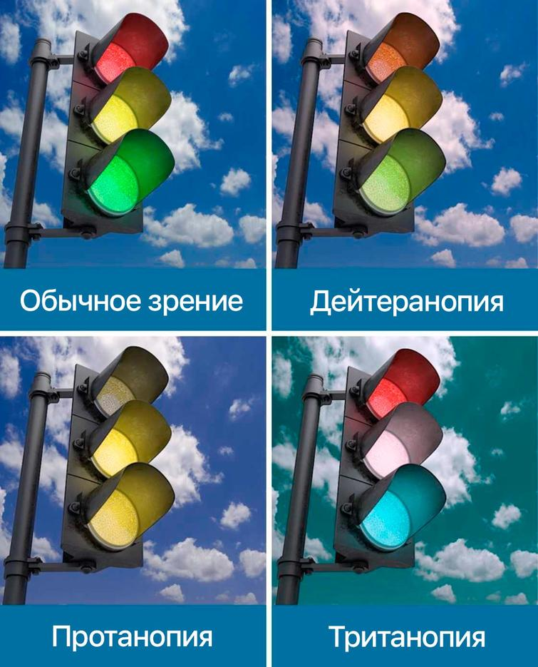
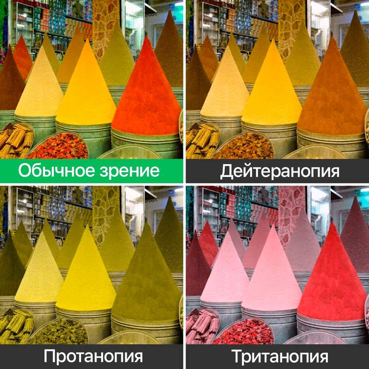

Виды дальтонизма
Виды дальтонизма:
- Протанопия – при которой человек не отличает зеленые оттенки от красных
- Дейтеранопия – больной человек не отличает зеленый цвет от синего
- Тританопия – нарушения зрения в сине-фиолетовой части спектра. Человек видит только красные и зеленые оттенки
- Трихромазия – человек различает три основных цвета. При этом это состояние может быть вполне нормальным и не характеризоваться как дальтонизм
- Ахроматопсия – характеризуется полным отсутствием цветовых ощущений
| Виды дальтонизма | Самарская область | Оренбургская область |
| Протанопия | 1411 | 1267 |
| Дейтеранопия | 714 | 478 |
| Тританопия | 438 | 219 |
| Трихромазия | 333 | 359 |
| Ахроматопсия | 141 | 207 |
Протанопия – красно-зеленый дальтонизм
Этот тип дальтонизма встречается у 7-8% мужчин и 0,2-0,5% женщин. Это заболевание характеризуется отсутствием нормального восприятия зеленого, красного и синего цвета. Чаще всего такой дальтонизм передается по наследству. Лечение этой формы заболевания безуспешно. В этом случае у человека присутствует ген дальтонизма, который вызывает данный дефект. Протанопия связана с отсутствием на сетчатке глаза определенных колбочек, которые необходимы для нормального восприятия оранжевой и красной части спектра. При этом больной человек будет воспринимать желто-зеленый цвет как оранжевый, пурпурный цвет для него не будет ничем отличаться от голубого. Однако зеленый оттенок он отделит от синего цвета, а насыщенный красный от зеленого.
Дейтеранопия – дальтонизм человека
Зрение при наличии дальтонизма этого типа нарушается в большинстве случаев еще с рождения. Дейтеранопией страдает около 1% населения. Если показать больному человеку картинки, где преобладают пурпурные, желто-зеленые, сине-зеленные тона, он не сможет их правильно увидеть и интерпретировать. Дальтонизм зеленого и красного цвета вызван отсутствием на сетчатке глаз специального пигмента – хлоролаба, который отвечает за восприятие этой области спектра. При этом больной дейтеранопией хорошо отличит зеленый цвет от красного и фиолетового.

Тританопия – разновидность дальтонизма
Один из типов дальтонизма, который подразумевает отсутствие адекватного цветовосприятия определенной части спектра. В большинстве случаев данная болезнь имеет врожденных характер и встречается крайне редко. Женщины страдают дальтонизмом этого типа в таком же количестве, как мужчины. Это связано с тем, что причиной данной болезни является мутация в 7 хромосоме, что с одинаковой вероятностью может произойти у обоих полов. Цветовая слепота при дальтонизме данного типа появляется в области сине-желтых, фиолетовых и красных оттенков.
Трихромазия – радужный дальтонизм
Этот тип дальтонизма характеризуется наличием некоторых трудностей восприятия отдельных оттенков, при этом преимущественное количество цветов больной видит хорошо. Различают следующие формы дальтонизма трихромазии:
- A - почти полностью отсутствует восприятие зеленых и красных оттенков
- B - серьезное нарушение, при котором больной различает цвета с большими трудностями
- C - незначительная аномалия, которая не вызывает значительного дискомфорта
Ахроматопсия – полный дальтонизм
Ахроматопсия характеризуется полным отсутствием цветовосприятия. Больные люди не различают никаких цветов. Они видят все серым. Различают такие разновидности ахроматопсии::
- Палочковая – отсутствуют колбочки, которые необходимы для нормального восприятия разных цветов. В этом случае все световые волны, попадая на сетчатку глаза, воспринимаются в виде серого оттенка
- Колбочковая – характеризуется восприятием всех цветов в одном тоне